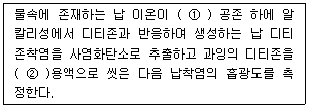
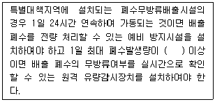
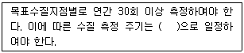
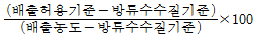
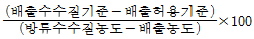
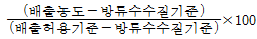
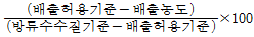

수질환경산업기사 (2014-03-02 기출문제)
1과목: 수질오염개론
1. 수분함량 97%의 슬러지 14.7m3를 수분함량 85%로 농축하면 농축 후 슬러지 용적은? (단, 슬러지 비중은 1.0)
- 1.92m3
- 2.94m3
- 3.21m3
- 4.43m3
(정답률: 78%)

2. 용액을 통해 흐르는 전류의 특성으로 옳지 않은 것은? (단, 금속을 통해 흐르는 전류와 비교)
- 용액에서 화학변화가 일어난다.
- 전류는 전자에 의해 운반된다.
- 온도의 상승은 저항을 감소시킨다.
- 대체로 전기저항이 금속의 경우보다 크다.
(정답률: 57%)
3. PbSO4(MW＝303.3)의 용해도는 0.038g/L이다. PbSO4의 용해도적 상수는?
- 약 1.6 × 10-8
- 약 2.4 × 10-8
- 약 3.2 × 10-8
- 약 4.8 × 10-8
(정답률: 65%)
4. BOD가 10,000mg/L이고 염소이온농도가 1,000mg/L인 분뇨를 희석하여 활성 슬러지법으로 처리한 결과 방류수의 BOD는 20mg/L, 염소이온의 농도는 25mg/L 으로 나타났다. 활성슬러지법의 처리효율은? (단, 염소는 생물학적 처리에서 제거되지 않음)
- 86%
- 88%
- 90%
- 92%
(정답률: 56%)
5. Ca(OH)2 1,480mg/L 용액의 pH는? (단, Ca(OH)2의 분자량은 74 이고 완전해리 한다.)
- 약 12.0
- 약 12.3
- 약 12.6
- 약 12.9
(정답률: 55%)
6. 친수성 콜로이드에 관한 설명으로 옳지 않은 것은?
- 물 속에서 현탁상태(Suspension)로 존재한다.
- 염에 대하여 큰 영향을 받지 않는다.
- 단백질, 합성된 고단위 중합체 등이 해당된다.
- 틴달효과가 약하거나 거의 없다.
(정답률: 70%)
7. 촉매에 관한 내용으로 옳지 않은 것은?
- 반응속도를 느리게 하는 효과가 있는 것을 역촉매라고 한다.
- 반응의 역할에 따라 반응 후 본래 상태로 회복여부가 결정된다.
- 반응의 최종 평형상태에는 아무런 영향을 미치지 않는다.
- 화학반응의 속도를 변화시키는 능력을 가지고 있다.
(정답률: 82%)
8. 초기농도가 300mg/L인 오염물질이 있다. 이 물질의 반감기가 10day라고 할 때 반응속도가 1차 반응에 따른다면 5일 후의 농도는?
- 212mg/L
- 228mg/L
- 235mg/L
- 246mg/L
(정답률: 78%)
9. 포도당(C6H12O6) 500mg 이 탄산가스와 물로 완전산화하는데 소요되는 이론적 산소요구량은?
- 512mg
- 521mg
- 533mg
- 548mg
(정답률: 80%)
10. Ca＋＋ 가 200mg/일 때 몇 N농도 인가?
- 0.01
- 0.02
- 0.5
- 1.0
(정답률: 74%)
11. 수중에 탄산가스 농도나 암모니아성 질소의 농도가 증가하여 Fungi가 사라지는 하천의 변화과정 지대는? (단, Whippte의 4지대 기준)
- 활발한 분해지대
- 점진적 분해지대
- 분해지대
- 점진적 회복지대
(정답률: 81%)
12. 지구상 담수의 존재량을 볼 때 그 양이 가장 큰 존재 형태는?
- 하천수
- 빙하
- 호소수
- 지하수
(정답률: 88%)
13. 최종BOD(BODu)가 500mg/이고, BOD5가 400mg/L일 때 탈산소 계수(base＝상용대수)는?
- 0.12/day
- 0.14/day
- 0.16/day
- 0.18/day
(정답률: 73%)
14. 현재의 BOD가 1mg/L 이고 유량이 200,000m3/day인 하천주변에 양돈단지를 조성하고자 한다. 하천의 환경기준이 BOD 5mg/L 이하인 하천에서 환경기준치 이하로 유지시키기 위한 최대사육돼지의 마리수는? (단, 돼지 사육으로 인한 하천의 유량증가는 무시하고 돼지 1마리당 BOD배출량은 0.16kg/day로 본다.)
- 3,500마리
- 4,000마리
- 4,500마리
- 5,000마리
(정답률: 69%)
15. [여러 물질이 혼합된 용액에서 어느 물질의 증기압 (분압)은 혼합액에서 그 물질의 몰 분율에 순수한 상태에서 그 물질의 증기압을 곱한 것과 같다.]는 어떤 법칙을 설명한 것인가?
- Dalton의 분압법칙
- Henry의 법칙
- Avogadro의 법칙
- Raoult의 법칙
(정답률: 58%)
16. 탈산소 계수(상용대수)가 0.2day－1이면, BOD3/BOD5 비는?
- 0.74
- 0.78
- 0.83
- 0.87
(정답률: 47%)
17. 점오염원에 대한 설명으로 옳지 않은 것은?
- 고농도의 하ㆍ폐수가 특정한 한 점에서 집중 배출되는 오염원이다.
- 대체로 좁은 지역에서 발생하며 시간에 따른 수질의 변화가 있다.
- 배출위치를 정확히 파악할 수 있다.
- 강우 시 집중적으로 발생하는 영양염류가 주요 오염물질이다.
(정답률: 75%)
18. CH2O 100mg/L의 이론적 COD 값은?
- 97mg/L
- 107mg/L
- 117mg/L
- 127mg/L
(정답률: 71%)
19. 다음 중 가경도(Pseudo Hardness) 유발 무질로 가장 대표적인 것은?
- 칼슘
- 염소
- 나트륨
- 철
(정답률: 54%)
20. 다음 중 적조의 발생에 관한 설명 중 옳지 않은 것은?
- 정체해역에서 일어나기 쉬운 현상이다.
- 강우에 따라 하천수가 해수에 유입될 때 발생될 수 있다.
- 수괴의 연직 안정도가 크고 독립해 있을 때 발생한다.
- 해역의 영양 부족 또는 염소농도 증가로 발생된다.
(정답률: 78%)
2과목: 수질오염방지기술
21. 암모늄이온(NH4+)을 27mg/L 함유하고 있는 폐수 1,667m3을 이온교환수지로 NH4+를 제거하고자 할 때 100,000g CaCO3/m3의 처리 능력을 갖는 양이온 교환수지의 소요용적은? (단, Ca 원자량：40)
- 0.60m3
- 0.85m3
- 1.25m3
- 1.50m3
(정답률: 58%)
22. 어떤 산업폐수를 중화처리하는데 NaOH 0.1% 용액 30mL가 필요하였다. 이를 0.1% Ca(OH)2 로 대체할 경우 몇 mL가 필요한가? (단, Ca 원자량：40)
- 15
- 28
- 32
- 37
(정답률: 55%)
23. 1kg의 BOD5를 호기성 처리하는데 0.8kg의 O2가 필요하고, 표면교반기를 통해 전력 1kW 로 물에 2.4kg O2를 주입할 수 있다면 전력량 1,000kW/day로 처리할 수 있는 이론적 BOD5 부하량은?
- 800kg/day
- 1,000kg/day
- 2,000kg/day
- 3,000kg/day
(정답률: 52%)
24. 포기조내 MLSS의 농도가 2,500mg/L 이고, SV30 이 30%일 때 SVI 는?
- 85
- 120
- 135
- 150
(정답률: 65%)
25. 길이 20m, 폭 6m, 길이 4m인 직사각형 침전지에 유입되는 폐수가 하루에 2,400m3 이고 BOD 농도는 250mg/L, SS농도가 370mg/L 라면 수리학적 표면 부하율은?
- 6m3/m2ㆍ일
- 10m3/m2ㆍ일
- 15m3/m2ㆍ일
- 20m3/m2ㆍ일
(정답률: 65%)
26. 다음은 슬러지 처리공정을 순서대로 배치한 것이다. 일반적인 순서로 가장 옳은 것은?
- 농축→약품조정(개량)→유기물의 안정화→건조→탈수→최종처분
- 농축→유기물의 안정화→약품조정(개량)→탈수→건조→최종처분
- 약품조정(개량)→농축→유기물의 안정화→탈수→건조→최종처분
- 유기물의 안정화→농축→약품조정(개량)→탈수→건조→최종처분
(정답률: 74%)
27. 부피가 1,000m3인 탱크에서 G(평균속도 경사) 값을 30/s로 유지하기 위해 필요한 이론적 소요동력(W)은? (단, 물의 점성계수는 1.139×10－3Nㆍs/m2)
- 1,025W
- 1,250W
- 1,425W
- 1,650W
(정답률: 53%)
28. BOD가 250mg/이고 유량이 2,000m3/day인 폐수를 활성슬러지법으로 처리하고자 한다. 포기조의 BOD 용적 부하가 0.4kg/m3ㆍday 라면 포기조의 부피는?
- 1,250m3
- 1,000m3
- 750m3
- 500m3
(정답률: 63%)
29. 정수처리의 단위공정으로 오존(O3)처리법이 다른 처리법에 비하여 우수한 점이라 볼 수 없는 것은?
- 소독부산물의 생성을 유발하는 각종 전구물질에 대한 처리효율이 높다.
- 오존은 자체의 높은 산화력으로 염소에 비하여 높은 살균력을 가지고 있다.
- 전염소처리를 할 경우, 염소와 반응하여 잔류염소를 증가시킨다.
- 철, 망간의 산화능력이 크다.
(정답률: 60%)
30. 다음 특성을 갖는 폐수를 활성슬러지법으로 처리할 때 포기조내의 MLSS 농도를 일정하게 유지하려면 반송비는 약 얼마로 유지하여야 하는가? (단, 유입원수의 SS는 250mg/L, 포기조내의 MLSS는 2,500mg/L, 반송슬러지 농도는 8,000mg/L이며, 포기조 내에서 슬러지 생성 및 방류수 중의 SS는 무시한다.)
- 20%
- 30%
- 40%
- 50%
(정답률: 40%)
31. 하수 슬러지의 농축 방법별 장단점으로 옳지 않은 것은?
- 중력식 농축：잉여슬러지의 농축에 부적합
- 부상식 농축：약품 주입 없이도 운전 가능
- 원심분리 농축：악취가 적음
- 중력벨트 농축：별도의 세정장치가 필요 없음
(정답률: 72%)
32. 200mg/L의 Ethanol(C2H5OH)만을 함유한 공장폐수 3,000m3/day를 활성슬러지 공법으로 처리하려면 하루에 첨가하여야 하는 N의 양은? (단, Ethanol은 완전분해(COD＝BOD)하고, 독성이 없으며 BOD：N：P＝100：5：1 이다.)
- 42kg
- 63kg
- 81kg
- 109kg
(정답률: 50%)
33. 생물학적으로 하수 내 질소와 인을 동시에 제거할 수 있는 고도처리공법인 혐기무산소 호기조합법에 관한 설명으로 틀린 것은?
- 방류수의 인 농도를 안정적으로 확보할 필요가 있는 경우에는 호기 반응조의 말단에 응집제를 첨가할 설비를 설치하는 것이 바람직하다.
- 인제거를 효과적으로 행하기 위해서는 일차침전지 슬러지와 잉여슬러지의 농축을 분리하는 것이 바람직하다.
- 혐기조에서는 인방출, 호기조에서는 인의 과잉섭취현상이 발생한다.
- 인제거율 또는 인제거량은 잉여슬러지의 인방출률과 수온에 의해 결정된다.
(정답률: 51%)
34. 혐기성 조건하에서 400g 의 C6H12O6(Glucose)로부터 발생 가능한 CH4가스의 용적은? (단, 표준상태 기준)
- 149L
- 176L
- 187L
- 198L
(정답률: 61%)
35. BOD5 가 85mg/L가 하수가 완전혼합 활성슬러지공정으로 처리된다. 유출수의 BOD5 가 15mg/L, 온도 20℃, 유입유량 40,000톤/일, MLVSS가 2,000mg/L, Y값 0.6mgVSS/mgBOD5, Kd값 0.6d－1, 미생물체류시간 10일이라면 Y 값과 Kd값을 이용한 반응조의 부피(m3)는? (단, 비중은 1.0 기준)
- 800m3
- 1,000m3
- 1,200m3
- 1,400m3
(정답률: 50%)
36. 어떤 정유 공장에서 최소 입경이 0.009cm인 기름방울을 제거하려고 한다. 부상속도는? (단, 물의 밀도는 1g/cm3, 기름의 밀도 0.9g/cm3, 점도는 0.02g/cmㆍsec, Stokes 법칙 적용)
- 0.044cm/sec
- 0.033cm/sec
- 0.022cm/sec
- 0.011cm/sec
(정답률: 73%)
37. BOD농도가 240mg/L인 폐수를 폭기조 BOD 부하 0.4kg BOD/kg MLSSㆍday인 활성 슬러지법으로 6시간 폭기할 때 MLSS 농도(mg/L)는?
- 3,300mg/L
- 3,000mg/L
- 2,700mg/L
- 2,400mg/L
(정답률: 55%)
38. 활성슬러지법에서 폭기조의 유효 용적이 900m3 이고 MLSS 농도가 2,400mg/이다. 고형물 체류시간(SRT)이 6일이라고 한다면 건조된 잉여슬러지 생산량은? (단, 유출미생물량은 고려하지 않음)
- 260kg/day
- 320kg/day
- 360kg/day
- 400kg/day
(정답률: 59%)
39. 3차 처리 프로세스 중 5단계-Bardenpho프로세스에 대한 설명으로 옳지 않은 것은?
- 1차 포기조에서는 질산화가 일어난다.
- 혐기조에서는 용해성 인의 과잉흡수가 일어난다.
- 인의 제거는 인의 함량이 높은 잉여슬러지를 제거함으로 가능하다.
- 무산소조에서는 탈질화과정이 일어난다.
(정답률: 65%)
40. 고형물의 농도가 15%인 슬러지 100kg을 건조상에서 건조시킨 후 수분이 20%로 되었다. 제거된 수분의 양은? (단, 슬러지 비중 1.0)
- 약 54.2kg
- 약 65.3kg
- 약 72.6kg
- 약 81.3kg
(정답률: 58%)
3과목: 수질오염공정시험방법
41. 시안 측정방법과 가장 거리가 먼 것은?
- 자외선/가시선 분광법
- 이온전극법
- 연속흐름법
- 질량분석법
(정답률: 62%)
42. 불소(자외선/가시선 분광법)측정에 관한 설명으로 틀린 것은?
- 알루미늄 및 철의 방해가 크나 증류하면 영향이 없다.
- 정량한계는 0.5mg/L 이다.
- 청색의 복합 착화합물의 흡광도를 620nm에서 측정한다.
- 전처리는 직접증류법과 수증기증류법이 적용된다.
(정답률: 59%)
43. 식물성 플랑크톤을 측정하기 위한 시료 채취시 정성 채집을 위해 이용하는 것은?
- 플랑크톤 네트(Mesh Size 25μm)
- 반돈 채수기
- 채수병
- 미량펌프채수기
(정답률: 73%)
44. 6가 크롬을 자외선/가시선 분광법으로 측정할 때에 관한 내용으로 옳은 것은?
- 산성 용액에서 다이페닐카바자이드와 반응하여 생성되는 청색 착화합물의 흡광도를 620nm에서 측정
- 산성 용액에서 페난트로린용액과 반응하여 생성되는 청색 착화합물의 흡광도를 620nm에서 측정
- 산성 용액에서 다이페닐카바자이드와 반응하여 생성되는 적자색 착화합물의 흡광도를 540nm에서 측정
- 산성 용액에서 페난트로린용액과 반응하여 생성되는 적자색 착화합물의 흡광도를 540nm에서 측정
(정답률: 66%)
45. 바륨(금속류) 시험방법으로 알맞지 않은 것은? (단, 공정시험기준)
- 불꽃원자흡수분광광도법
- 자외선/가시선 분광법
- 유도결합플라스마 원자발광분광법
- 유도결합플라스마 질량분석법
(정답률: 69%)
46. 수은(냉증기-원자흡수분광광도법)측정 시 물속에 있는 수은을 금속수은으로 산화시키기 위해 주입하는 것은?
- 이염화주석
- 아연분말
- 염산하이드록실아민
- 시안화칼륨
(정답률: 65%)
47. 실험에 일반적으로 적용되는 용어의 정의로 틀린 것은? (단, 공정시험기준 기준)
- '감압' 이라 함은 따로 규정이 없는 한 15mmH2O 이하를 뜻한다.
- '밀폐용기' 라 함은 취급 또는 저장하는 동안에 이물질이 들어가거나 또는 내용물이 손실되지 아니하도록 보호하는 용기를 말한다.
- '냄새가 없다' 라고 기재한 것은 냄새가 없거나 또는 거의 없는 것을 표시하는 것이다.
- '정확히 취하여' 란 규정한 양의 액체를 부피피펫으로 눈금까지 취하는 것을 말한다.
(정답률: 81%)
48. 하천유량(유속 면적법) 측정의 적용범위에 관한 내용으로 틀린 것은?
- 모든 유량 규모에서 하나의 하도로 형성되는 지점
- 대규모 하천을 제외하고 가능하면 도섭으로 측정할 수 있는 지점
- 교량 등 구조물 근처에서 측정할 경우 교량의 하류지점
- 합류나 분류가 없는 지점
(정답률: 70%)
49. 웨어의 수로에 관한 설명으로 틀린 것은?
- 수로는 목재, 철판, PVC판, FRP 등을 이용하여 만들며 부식성을 고려하여 내구성이 강한 재질을 선택한다.
- 수로의 크기는 수로의 내부치수로 정하되 폐수량에 따라 적절하게 결정한다.
- 수로는 바닥면을 수평으로 하며 수위를 읽는데 오차가 생기지 않도록 한다.
- 유수의 도입 부분은 상류 측의 수로가 웨어의 수로 폭과 깊이보다 작을 경우에는 없어도 좋다.
(정답률: 68%)
50. 용존산소를 전극법으로 측정할 때에 관한 내용으로 틀린 것은?
- 정량한계는 0.1mg/L 이다
- 격막 필름은 가스를 선택적으로 통과시키지 못하므로 장시간 사용 시 황화수소 가스의 유입으로 감도가 낮아 질 수 있다
- 정확도는 수중의 용존 산소를 윙클러 아자이드화나트륨 변법으로 측정한 결과와 비교하여 산출한다.
- 정확도는 4회 이상 측정하여 측정 평균값의 상대 백분율로서 나타내며 그 값이 95%~1⑤% 이내 이어야 한다.
(정답률: 59%)
51. 총 유기탄소에 측정시 적용되는 용어에 관한 설명으로 틀린 것은?
- 무기성 탄소：수중에 탄산염, 중탄산염, 용존 이산화탄소 등 무기적으로 결합된 탄소의 합을 말한다.
- 부유성 유기탄소：총 유기탄소 중 공극 0.45μm의 막 여지를 통과하여 부유하는 유기탄소를 말한다.
- 비정화성 유기탄소：총 탄소 중 pH 2이하에서 포기에 의해 정화되지 않는 탄소를 말한다.
- 총 탄소：수중에서 존재하는 유기적 또는 무기적으로 결합된 탄소의 합을 말한다.
(정답률: 61%)
52. 다음 항목 중 최대 보존기간이 '즉시 측정' 에 해당되지 않는 것은?
- 수소이온농도
- 용존산소(전극법)
- 온도
- 냄새
(정답률: 66%)
53. 시료의 보존방법이 '6℃ 이하 보관' 에 해당되는 측정항목은?
- 6가 크롬
- 유기인
- 1.4 다이옥산
- 황산이온
(정답률: 66%)
54. 물벼룩을 이용한 급성 독성 시험법과 관련된 생태독성값(TU)에 대한 내용으로 옳은 것은?
- 통계적 방법을 이용하여 반수영향농도 EC50을 구한 후 이에 100을 곱하여준 값을 말한다.
- 통계적 방법을 이용하여 반수영향농도 EC50을 구한 후 이를 100으로 나눠준 값을 말한다.
- 통계적 방법을 이용하여 반수영향농도 EC50을 구한 후 이를 10을 곱하여준 값을 말한다.
- 통계적 방법을 이용하여 반수영향농도 EC50을 구한 후 이를 10으로 나눠준 값을 말한다.
(정답률: 69%)
55. 개수로에 의한 유량 측정시 케이지(Chezy)의 유속공식이 적용된다. 경심이 0.653m, 홈 바닥의 구배 i＝1/1,500, 유속계수가 25 일 때 평균 유속은? (단, 수로의 구성재질과 수로 단면의 형상이 일정하고 수로의 길이가 적어도 10m까지 똑바른 경우)
- 약 0.52m/sec
- 약 0.62m/sec
- 약 0.74m/sec
- 약 0.85m/sec
(정답률: 39%)
56. 투명도 측정에 관한 설명으로 옳은 것은?
- 투명도판은 무게가 3kg, 지름 30cm인 백색원판에 지름 5cm의 구멍 8개가 뚫린 것이다.
- 호소나 하천에 투명도판을 수면으로부터 천천히 넗어 보이지 않게 시작한 깊이를 1m 단위로 읽어 투명도를 측정한다.
- 투명도 판의 색도차는 투명도에 미치는 영향이 크므로 표면이 더러울 때는 다시 색칠하여야 한다.
- 흐름이 있어 줄이 기울어질 경우에는 5kg 정도의 추를 달아서 줄을 세워야 하며 줄은 1m 간격의 눈금표시가 있어야 한다.
(정답률: 56%)
57. 다음은 납분석(자외선/가시선 분광법)에 대한 설명이다. ( )안에 옳은 내용은?

- ① 시안화칼륨, ② 시안화칼륨
- ① 시안화칼륨, ② 클로로폼
- ① 다이메틸글리옥심, ② 시안화칼륨
- ① 다이메틸글리옥심, ② 클로로폼
(정답률: 61%)
58. 다이에틸헥실프탈레이트 방법용 시료에 잔류염소가 공존할 경우의 시료 보존방법은?
- 시료 1L당 티오황산나트륨을 80mg 첨가한다.
- 시료 1L당 글루타르알데하이드를 80mg 첨가한다.
- 시료 1L당 브로모폼을 80mg 첨가한다.
- 시료 1L당 과망간산칼륨을 80mg 첨가한다.
(정답률: 66%)
59. 다음 용어에 관한 설명 중 틀린 것은?
- “방울수”라 함은 표준온도에서 정제수 20방울을 적하할 때, 그 부피가 약 1mL 되는 거을 말한다.
- “약”이라 함은 기재된 양에 대하여 ±10% 이상의 차이가 있어서는 안된다.
- 무게를 “정확히 단다”라 함은 규정된 수치의 무게를 0.1mg까지 다는 것을 말한다.
- “항량으로 될 때까지 건조한다”라 함은 같은 조건에서 1시간 더 건조할 때 전후 무게의 차가 g당 0.3mg 이하일 때를 말한다.
(정답률: 73%)
60. 노말헥산(n-Hexane) 추출물질의 측정에 관한 설명 중 틀린 것은?
- 정량한계는 0.5mg/L 이다.
- 최종 무게 측정을 방해할 가능성이 있는 입자가 존재할 경우 0.45μm 여과지로 여과한다.
- 폐수 중 휘발성이 강한 탄화수소 등을 대상으로 하며 성분별 선택적 정량이 용이하다.
- 증발용기는 알루미늄박으로 만든 접시, 비커 또는 증류플라스크로서 부피가 50~250mL 인 것을 사용한다.
(정답률: 37%)
4과목: 수질환경관계법규
61. 환경부장관이 의료기관의 배출시설(폐수무방류배출시설은 제외)에 대하여 조업정지를 명하여야 하는 경우로서 그 조업 정지가 주민의 생활, 대외적인 신용, 고용, 물가 등 국민경제 또는 그 밖의 공익에 현저한 지장을 줄 우려가 있다고 인정되는 경우 조업정지처분을 갈음하여 부과할 수 있는 과징금의 최대 액수는?
- 1억원
- 2억원
- 3억원
- 5억원
(정답률: 71%)
62. 환경부장관은 개선영령을 받은 자가 개선명령을 이행하지 아니하거나 기간 이내에 이행은 하였으나 배출허용기준을 계속 초과할 때에는 해당 배출시설의 전부 또는 일부에 대한 조업정지를 명할 수 있다. 이에 따른 조업정지 명령을 위반 한 자에 대한 벌칙기준은?
- 1년 이하의 징역 또는 1천만원 이하의 벌금
- 2년 이하의 징역 또는 1천만원 이하의 벌금
- 3년 이하의 징역 또는 2천만원 이하의 벌금
- 5년 이하의 징역 또는 3천만원 이하의 벌금
(정답률: 57%)
63. 위임업무 보고사항 중 “비점오염원의 설치신고 및 방지시설 설치 현황 및 행정처분 현황” 의 보고횟수 기준은?
- 연 1회
- 연 2회
- 연 4회
- 수시
(정답률: 67%)
64. 비점오염저감시설 중 자연형 시설이 아닌 것은?
- 침투시설
- 식생형 시설
- 저류시설
- 와류형 시설
(정답률: 68%)
65. 수질오염방제센터에서 수행하는 사업과 가장 거리가 먼 것은?
- 공공수역의 수질오염사고 감시
- 지자체별 수질오염사고 예방 및 처리 대행
- 수질오염 방제기술 관련 교육ㆍ훈련, 연구개발 및 홍보
- 수질오염사고에 대비한 장비, 자재 약품 등의 비치 및 보관을 위한 시설의 설치ㆍ운영
(정답률: 64%)
66. 대권역 수질 및 수생태계 보전계획에 포함되어야 하는 사항과 가장 거리가 먼 것은?
- 수질 및 수생태계 보전 목표
- 상수원 및 물 이용현황
- 수질오염 예방 및 저감 대책
- 점오염원, 비점오염원 및 기타수질오염원의 분포현황
(정답률: 31%)
67. 기타 수질오염원 시설 중 복합물류터미널시설(화물의 운송, 보관, 하역과 관련된 작업을 하는 시설)의 규모기준으로 옳은 것은?
- 면적이 10만 제곱미터 이상일 것
- 면적이 20만 제곱미터 이상일 것
- 면적이 30만 제곱미터 이상일 것
- 면적이 50만 제곱미터 이상일 것
(정답률: 64%)
68. 하천의 수질 및 수생태계 환경기준 중 헥사클로로벤젠 기준값(mg/L)으로 옳은 것은? (단, 사람의 건강보호 기준)
- 0.04 이하
- 0.004 이하
- 0.0004 이하
- 0.00004 이하
(정답률: 56%)
69. 환경부령으로 정하는 수로에 해당되지 않는 것은?
- 상수관거
- 지하수로
- 운하
- 농업용수로
(정답률: 77%)
70. 다음 중 호소수의 이용 상황 등을 조사, 측정하여야 하는 대상에 해당되지 않는 것은?
- 호소로서 만수위의 면적이 30만 제곱미터 이상인 호소
- 1일 30만톤 이상의 원수를 취수하는 호소
- 생물다양성이 풍부하여 특별히 보전할 필요가 있다고 인정되는 호소
- 수질오염이 심하여 특별한 관리가 필요하다고 인정되는 호소
(정답률: 53%)
71. 오염총량관리기본계획 수립시 포함되어야 하는 사항과 가장 거리가 먼 것은?
- 해당 지역 개발계획의 내용
- 해당 지역 개발계획에 다른 추가 오염부하량의 할당
- 관할 지역에서 배출되는 오염부하량의 총량 및 저감계획
- 지방자치단체별ㆍ수계구간별 오염부하량의 할당
(정답률: 46%)
72. 다음은 폐수무방류배출시설의 세부 설치기준에 관한 내용이다. ( )안에 옳은 내용은?

- 50세제곱미터
- 100세제곱미터
- 200세제곱미터
- 300세제곱미터
(정답률: 63%)
73. 다음은 총량관리 단위유역의 수질 측정방법에 관한 내용이다. ( )안에 옳은 내용은?

- 3일 간격
- 5일 간격
- 8일 간격
- 10일 간격
(정답률: 70%)
74. 오염총량관리기본방침에 포함되어야 할 사항과 가장 거리가 먼 것은?
- 오염총량관리의 목표
- 오염총량관리의 대상 수질오염물질 종류
- 오염원의 조사 및 오염부하량 산정방법
- 오염총량관리 대상 물질 배출량
(정답률: 46%)
75. 초과부과금 산정을 위한 기준에서 수질오염물질 1킬로그램당 부과 금액이 가장 낮은 수질오염물질은?
- 카드뮴 및 그 화합물
- 유기인 화합물
- 비소 및 그 화합물
- 6가크롬 화합물
(정답률: 57%)
76. 법에서 사용하는 용어의 뜻으로 가장 거리가 먼 것은?
- 폐수：물에 액체성 또는 고체성의 수질오염물질이 섞여 있어 그대로는 사용할 수 없는 물을 말한다.
- 공공수역 : 하천, 호소, 항만, 연안해역, 그 밖에 공공용으로 사용되는 수역과 이에 접속하여 공공용으로 사용되는 환경부령으로 정하는 수로를 말한다.
- 비점오염원 : 수질오염물질을 불특정하게 배출하는 시설 및 장소로서 환경부령으로 정하는 것을 말한다.
- 강우유출수：비점오염원의 수질오염물질이 섞여 유출되는 빗물 또는 눈 녹은 물 등을 말한다.
(정답률: 55%)
77. 중점관리저수지 지정기준으로 옳은 것은?
- 총저수용량이 1천만세제곱미터 이상인 저수지
- 총저수용량이 2천만세제곱미터 이상인 저수지
- 총저수면적(홍수위 기준)이 1천만제곱미터 이상인 저수지
- 총저수면적(홍수위 기준)이 2천만제곱미터 이상인 저수지
(정답률: 44%)
78. 다음 중 방류수수질기준 초과율 산정공식으로 옳은 것은?




(정답률: 46%)
79. 폐수처리업 등록을 할 수 없는 자에 대한 기준으로 틀린 것은?
- 피성년후견인
- 폐수처리업의 등록이 취소된 후 2년이 지나지 아니한 자
- 피한정후견인
- 파산선고를 받은 후 2년이 지나지 아니한 자
(정답률: 65%)
80. 하천수질 및 수생태계 상태가 생물등급으로 '약간 나쁨~매우 나쁨' 일 때의 생물지표종(저서생물)은?(단, 수질 및 수생태계 상태별 생물학적 특성 이해표 기준)
- 붉은깔다구, 나방파리
- 넓적거머리, 민하루살이
- 물달팽이, 턱거머리
- 물삿갓벌레, 물벌레
(정답률: 78%)
농축 후 물의 부피는 (0.97 - 0.85) / 0.85 x 14.259 = 1.68m3이다. 따라서 건조물의 부피는 변하지 않고 0.441m3이다. 따라서 농축 후 슬러지의 총 부피는 0.441 + 1.68 = 2.121m3이다.
하지만 문제에서 슬러지의 비중이 1.0으로 주어졌으므로, 슬러지의 부피와 무게가 같다. 따라서 농축 후 슬러지의 용적은 2.121m3이다.
따라서 정답은 "2.94m3"이 아니라 "2.121m3"이다.